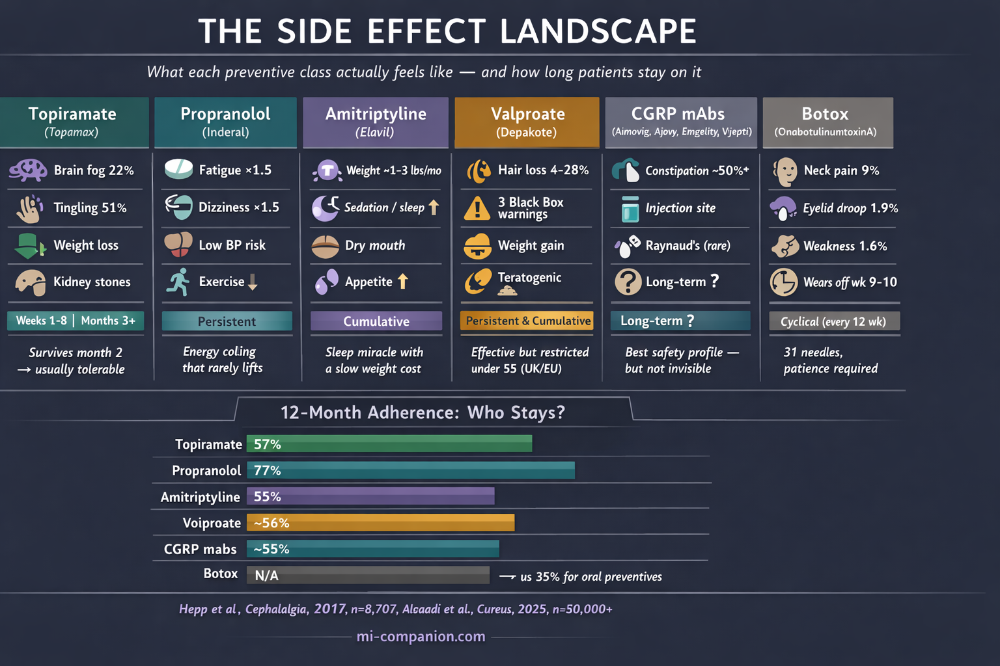
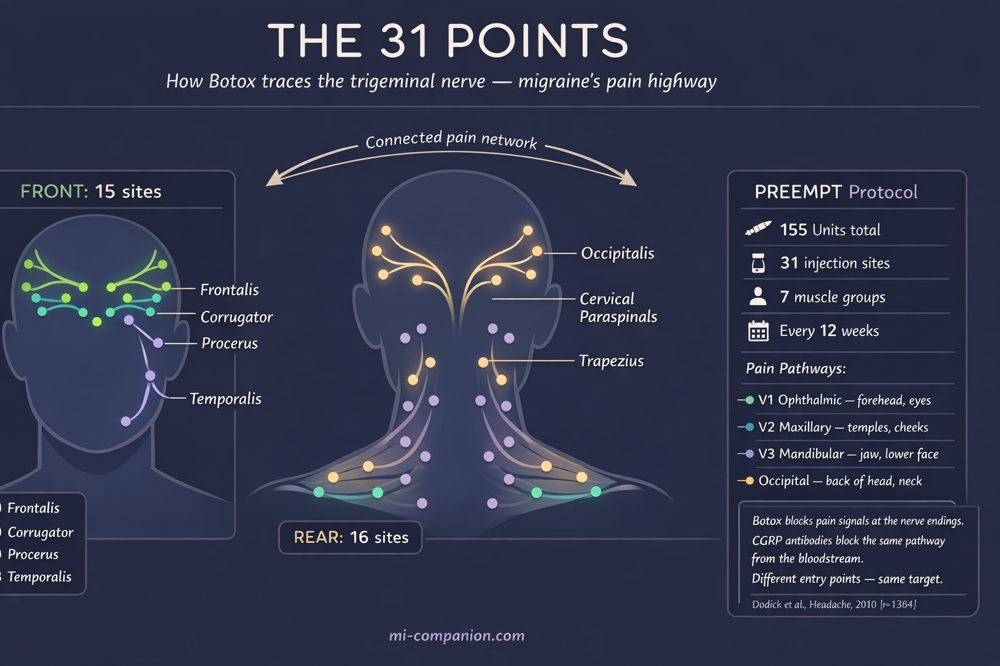

By Rustam Iuldashov
30 years lived experience with chronic migraine | Sources: 33 peer-reviewed references including Journal of Headache and Pain (n=32,990), PLoS One (n=108 RCTs), Cephalalgia (n=8,707) | Last updated: March 11, 2026
Medical Review: This content is based on peer-reviewed research from Journal of Headache and Pain, PLoS One, Pain Medicine, Cephalalgia, Therapeutic Advances in Drug Safety, Archives of Neurology, Cochrane Database of Systematic Reviews, Expert Opinion on Drug Safety, Frontiers in Pharmacology, Indian Journal of Dermatology, Biological Psychiatry, Headache, and Cureus.
Important Notice: This article is for informational purposes only and does not replace professional medical advice. The author is not a licensed physician or healthcare professional. Never start, stop, or change a preventive medication without consulting your prescribing physician.
Key Takeaways
- Every major preventive class works — but side effects, not lack of efficacy, drive most discontinuations. Nearly half of patients quit within 60 days[4]
- Topiramate’s cognitive effects are real (22% at standard dose) but frontloaded. If you survive two months, the worst is likely over. Kidney stone risk requires aggressive hydration[5][7]
- Beta-blocker fatigue is subtle and persistent — a 20% energy tax that clinical endpoints don’t capture. Patients with low baseline blood pressure face additional challenges from orthostatic hypotension[10]
- Amitriptyline helps sleep immediately but drives weight gain of 1–3 pounds per month through appetite and metabolic changes[15][16]
- Valproate carries three black box warnings and is restricted for people under 55 in the UK/EU due to reproductive risks[22][23]
- CGRP antibodies offer the best safety-efficacy balance available, but erenumab’s constipation rate (~50% in real-world studies) is far higher than trials suggested. Both CGRP antibodies and Botox target the trigeminal nerve from different directions[25][28]
- Don’t quit silently. Tell your doctor why — that conversation is the most important data point in your treatment
The prescription takes thirty seconds. The Google search takes thirty minutes. And somewhere around midnight, between a Reddit thread titled “Topamax ruined my life” and a forum post that ends with “I couldn’t remember my own phone number,” you start wondering whether the cure is worse than the disease.
It isn’t. Not usually. But the gap between what clinical trials measure and what patients actually experience is wide enough to lose people in — and that’s exactly what happens. A retrospective analysis of 8,707 chronic migraine patients found that roughly half discontinued their oral preventive within 60 days.[4] Not because the drugs failed. Because of how they felt. Adverse effects drove 24% of topiramate dropouts and 17% of amitriptyline dropouts.[4] At one year, only 35% to 56% remained on their medication.[4]
Those aren’t numbers. Those are people who gave up.
I’ve been one of them. Over 30 years with migraine, I’ve sat across from neurologists, taken the prescription, endured the side effects, and sometimes quit without saying a word. I’m not a doctor. But I know what the evidence says about how these drugs actually feel — and I know the conversations most patients never get to have during their first neurologist visit.

Topiramate: The Drug That Stole Your Words
You know the word. You can see the concept — it’s right there, hovering behind your eyes. But the name won’t come. This is topiramate’s signature: a theft so precise it takes your vocabulary and leaves everything else intact. This is often the trade-off for a brain that stays in a state of hyperexcitability.
The nickname “Dopamax” didn’t come from a marketing department. It came from patients. And the clinical data backs them up. At the standard 100 mg/day dose, 22% of patients in pivotal trials reported cognitive adverse events — confusion, psychomotor slowing, memory difficulty, word-finding problems.[5] Memory complaints hit 7% at 100 mg. Attention difficulties reached 6%. Language problems, 6%. These aren’t rare.[5]
But here’s what the forums won’t tell you: the timing matters enormously. A detailed time-course analysis of the pivotal trials found that nearly all adverse events cluster in the titration phase — the first four to eight weeks.[7] Paresthesia (that strange tingling in your hands and face) reached a cumulative incidence of 45.5% by day 28, but almost no new cases appeared after day 42.[7] Cognitive symptoms followed the same pattern. The drug front-loads its punishment.
Which means if you survive two months, you’ll likely keep what you’ve gained. And topiramate does deliver: clinical trials involving nearly 3,000 patients confirmed significant reductions in migraine frequency.[1] Unlike almost every other preventive, it causes weight loss — an average of 2.5 kg at 100 mg/day — which for patients emerging from an amitriptyline-induced weight spiral can feel like oxygen.[7][8]
What living on it actually looks like: Start at 25 mg. Tingling arrives within days — benign, weird, temporary. Weeks two through eight are the danger zone for brain fog. Carbonated drinks taste flat — a harmless consequence of topiramate’s carbonic anhydrase inhibition. The same mechanism carries a less harmless consequence: kidney stones. Topiramate users develop them at roughly two to four times the rate of the general population, because the resulting metabolic acidosis lowers urinary citrate.[1][5] Drinking significantly more water on this drug isn’t casual advice; it’s a medical countermeasure. If month two passes without major cognitive trouble, you’re likely in the clear. If the fog is unbearable, dropping back 25 mg and re-titrating slowly often helps.[1][9] Rarely is there any reason to exceed 100 mg/day for migraine.[1] And if your vision suddenly changes, stop the drug and call your doctor immediately — acute angle-closure glaucoma is rare but real.[1]
Beta-Blockers: The Energy Tax
Propranolol doesn’t have a dramatic nickname. It doesn’t inspire Reddit threads or support groups. It just quietly takes 20% of your energy and hopes you won’t notice.
You’ll notice.
A meta-analysis of 108 randomized controlled trials — the largest ever conducted on beta-blockers for headache — confirmed that propranolol cuts migraine frequency by about 1.5 attacks per month and is 40% more likely than placebo to halve your migraine days.[10] Solid evidence. But participants on beta-blockers were significantly more likely to report fatigue (relative risk: 1.5) and dizziness (relative risk: 1.5).[10] Not a dramatic increase. Just enough to change how your days feel.
The fatigue isn’t sleepiness. It’s a ceiling. Your resting heart rate drops. Your exercise tolerance shrinks. You can function — you can work, parent, commute — but the reserves are gone. The buffer between “managing” and “exhausted” thins to nothing. Some patients describe vivid dreams. Others report a flatness that mimics depression, though this meta-analysis found no statistically significant increase in depression compared to placebo[10] — challenging decades of clinical assumption.
What living on it actually looks like: Forty milligrams to start, typically split morning and evening. The full preventive benefit may take 12 weeks — three months of diminished energy before you know if it’s working.[12] Fatigue usually softens after the first month but rarely vanishes. If physical performance matters to your identity — running, cycling, competitive anything — this drug exacts a toll that never appears in a trial endpoint. And if your baseline blood pressure already runs low — as it does for many migraine patients, especially women — propranolol can push you into orthostatic hypotension: lightheadedness when standing, darkened vision on rising, a constant sense of being one quick movement away from the floor. Stopping abruptly can cause rebound hypertension and worsened headaches, so taper slowly under guidance.
Amitriptyline: The Comfortable Trap
There’s something seductive about a drug that helps you sleep. After months — years — of migraine-disrupted nights, amitriptyline at bedtime can feel like mercy. And it works: roughly 75% of patients in a long-term study reported headache improvement on low doses.[13] Response arrives faster than with beta-blockers, sometimes within four weeks.[12][14]
The trap is what happens on the scale.
Research consistently ranks amitriptyline among the antidepressants most likely to cause weight gain — 1.3 to 2.9 pounds per month, potentially exceeding ten pounds by six months.[15] The mechanism is ruthlessly efficient: histamine receptor blockade drives appetite up, while shifts in leptin, insulin, and cortisol push metabolism toward storage.[15][16] In a study of 49 migraine patients, BMI, leptin, C-peptide, and insulin levels all climbed significantly after just 12 weeks.[16] This connection between weight and migraine is part of the broader metabolic side of the equation.
This matters beyond vanity. Overweight and obese patients with migraine face increased attack frequency and severity.[15] The very drug meant to reduce migraines can, through weight gain, make them harder to control. A review of weight-change data across migraine preventives confirmed that amitriptyline and divalproex carry the highest incidence of weight gain among first-line agents.[15]
The anticholinergic effects — dry mouth, constipation, morning grogginess — are the daily friction. But the longer shadow is cognitive: long-term anticholinergic use has been associated with increased dementia risk, though evidence specific to the low doses used for migraine remains thin.[17]
What living on it actually looks like: Sleep improves within days. That alone can reduce migraine frequency. Pain reduction follows at four to six weeks. Weight gain accumulates slowly — insidiously — over months. Start monitoring from day one. At 10–25 mg for migraine (far below antidepressant doses of 75–150 mg), the side effects are milder but not absent.[15] If you gain 5% of your body weight in the first three months, it’s unlikely to reverse on its own.
Valproate: The Drug With the Black Box
Divalproex sodium earns a position no other migraine preventive holds: it carries three FDA black box warnings. Hepatotoxicity. Pancreatitis. Teratogenicity.[22]
Effectiveness isn’t the issue. About 44% of patients achieve at least a 50% reduction in migraine frequency, with a number needed to treat as low as 3.[18][19] The problem is everything else.
Weight gain. Tremor. Nausea. Drowsiness. And hair loss — dose-dependent, distressing, and surprisingly common. In one controlled trial, alopecia hit 4% of patients at low plasma levels but 28% at high levels.[21] Some patients report hair texture changes: curling, coarsening, graying.[21] For conditions that demand long-term treatment, these cosmetic effects erode compliance like water on stone.
But the reproductive risks are the real concern. Neural tube defects occur in 1–2% of exposed pregnancies.[22] Fetal valproate spectrum disorder can cause cognitive impairments, developmental delays, and autism spectrum features in affected children.[23] In the UK and EU, regulators have restricted valproate for all women and men under 55 — a sweeping action that reflects how seriously these risks are now taken.[23] The National Headache Foundation has publicly called the drug’s inclusion as a first-line option for women of reproductive age “particularly problematic.”[24]
⚠️ When to Seek Emergency Help
If you experience sudden, severe abdominal pain, persistent vomiting, or jaundice (yellowing of skin or eyes) while taking valproate, seek emergency medical attention immediately — these may signal pancreatitis or liver failure.[22]
If you discover you are pregnant while on any preventive medication, do not stop the drug abruptly. Contact your prescribing physician the same day to discuss a supervised plan. Abrupt discontinuation of some preventives (beta-blockers, antiepileptics) can trigger dangerous withdrawal effects.
What living on it actually looks like: Start low, titrate slowly. Nausea fades over months.[20] Tremor is usually mild at migraine doses. Hair loss may respond to zinc and selenium supplementation, though evidence is limited.[21] But if you are a woman considering pregnancy — now, someday, maybe — this is the wrong drug. Full stop. And if you’re a man under 55, newer data on fertility effects means this conversation applies to you too.[23]
CGRP Antibodies: Better, But Not Perfect
For decades, every migraine preventive was a borrowed drug — a beta-blocker designed for hearts, an antidepressant designed for mood, an anticonvulsant designed for seizures. The anti-CGRP monoclonal antibodies were the first medications designed for migraine. They target calcitonin gene-related peptide — a molecule released by the trigeminal nerve, the primary pain highway of migraine — rather than broadly suppressing brain activity or heart rate.[25][26] You can explore the full history of this breakthrough in The CGRP Revolution.
And the difference shows. A 2023 network meta-analysis of 74 trials and nearly 33,000 patients found, with high certainty, that CGRP antibodies offer the best combined safety and efficacy of all available preventives.[25] Fewer adverse events. Fewer dropouts. Higher adherence — about 55% at 12 months, compared to roughly 35% for oral drugs.[27] The 2024 APPRAISE trial made the comparison visceral: 56% of erenumab patients halved their migraine days, versus just 16% on traditional oral medications.[26]
Then real-world data arrived, and the picture grew more complicated.
Constipation became the defining side effect — especially for erenumab, which blocks the CGRP receptor rather than the peptide itself. A retrospective study of 317 chronic migraine patients found constipation in 51.5% of erenumab users, compared to 4.2% on fremanezumab and 12.9% on galcanezumab.[28] That’s not a footnote. That’s a majority. The FDA adverse event database analysis flagged additional signals: alopecia, Raynaud’s phenomenon, and a new worry — possible hypertension.[29] Reports from specialty clinics describe effects not captured in trials: weight changes, brain fog, mood shifts, affecting up to 25% of patients.[30]
None of these are as severe as topiramate’s cognitive theft or valproate’s teratogenicity. But “better” and “perfect” are different words.
What living on it actually looks like: Monthly self-injection (or quarterly IV infusion for eptinezumab). Some patients notice improvement in the first week. Most need three months for a full picture. If you choose erenumab and constipation strikes, consider switching to a ligand-binding alternative — fremanezumab or galcanezumab — which target the CGRP molecule rather than its receptor and carry significantly lower constipation rates.[28] Five-year cardiovascular safety data so far shows no major alarm signals,[30] but the ten-year picture is still blank.
Botox: 31 Needles, Quarterly
OnabotulinumtoxinA — Botox — occupies its own category: FDA-approved exclusively for chronic migraine (15 or more headache days per month), delivered by a physician, 31 injections across the forehead, temples, skull base, neck, and shoulders every 12 weeks. The injection map isn’t random — those 31 points trace the branches of the trigeminal nerve, the same pain pathway that CGRP antibodies target from the inside.[31] Botox blocks it from the outside, intercepting pain signals before they reach the brain.

In the PREEMPT trials, Botox reduced headache days by 8 to 9 per month versus 6 to 7 for placebo.[31] The most common adverse events were neck pain (9% vs. 3% placebo), eyelid ptosis (1.9%), and muscular weakness (1.6%).[32] The neck pain typically resolves within a week — other muscles compensating for the ones the toxin has temporarily silenced. Eyelid drooping, when it occurs, is temporary and embarrassing rather than dangerous.
What living on it actually looks like: Patience. The first cycle may do almost nothing. Most neurologists say three cycles — nine months — before you judge. The procedure takes about 20 minutes. The insurance authorization process takes about 20 days. If the drug wears off around week nine or ten, you’re not imagining it — patients in studies reported exactly this “wearing off” phenomenon, with relief returning after the next injection.[33]
The Conversation Your Doctor Needs You to Have
Side effects aren’t failure. They’re data.
The biggest mistake isn’t trying a drug and experiencing side effects. It’s quitting without telling your doctor why. “The brain fog was unbearable.” “I gained 15 pounds.” “I couldn’t run anymore.” Each of those sentences narrows the search for the drug that will actually fit your life. Without them, your neurologist is guessing blind. This is why building your migraine team is so critical; you need a partner who values your lived experience as much as the clinical data.
Most preventive side effects are frontloaded — worst during the first six to eight weeks, then fading.[5][7] Many patients who would eventually tolerate a medication stop just before the corner. But some side effects don’t fade. Persistent cognitive impairment. Unrelenting weight gain. An energy deficit that empties your life of everything migraine hasn’t already taken. Those deserve a switch, not suffering.
A 2023 meta-analysis put it plainly: CGRP antibodies and gepants cause the fewest adverse events leading to discontinuation, while valproate and amitriptyline cause the most.[25] That doesn’t make older drugs useless — propranolol remains an excellent first choice for many, and amitriptyline’s sleep benefits are genuinely transformative for the right patient. But the hierarchy of tolerability now has evidence behind it, and you deserve to know it exists.
You are not a clinical trial participant. You’re a person with a job, a body, relationships, and a limited supply of patience. The right preventive isn’t just the one that reduces your migraine days. It’s the one you can actually keep taking.
⚕️ Important Medical Disclaimer
This article is for informational and educational purposes only and does not constitute medical advice, diagnosis, or treatment. The author, Rustam Iuldashov, is not a licensed physician, neurologist, or healthcare professional. He is a patient advocate with 30 years of personal experience living with chronic migraine.
All clinical claims in this article are sourced from peer-reviewed research published in indexed medical journals. Study designs and sample sizes are noted where applicable.
Never start, stop, or change a preventive medication without consulting your prescribing physician. Abrupt discontinuation of beta-blockers, antiepileptics, and antidepressants can cause serious withdrawal effects. Dosing decisions, drug interactions, and reproductive safety assessments require individualized medical evaluation.
This content was last reviewed for accuracy on March 11, 2026.
References
- Marmura MJ. “Safety of topiramate for treating migraines.” Expert Opinion on Drug Safety, 13(9):1241–1248 (2014). doi:10.1517/14740338.2014.937423. Study design: Comprehensive review. n=multiple trials pooled.
- Linde K, Rossnagel K. “Propranolol for migraine prophylaxis.” Cochrane Database of Systematic Reviews, (2):CD003225 (2004). doi:10.1002/14651858.CD003225.pub2. Study design: Systematic review. n=58 trials.
- Jackson JL, Cogbill E, Santana-Davila R, et al. “A comparative effectiveness meta-analysis of drugs for the prophylaxis of migraine headache.” PLoS One, 10(7):e0130733 (2015). doi:10.1371/journal.pone.0130733. Study design: Network meta-analysis.
- Hepp Z, Dodick DW, Varon SF, et al. “Persistence and switching patterns of oral migraine prophylactic medications among patients with chronic migraine.” Cephalalgia, 37(5):470–485 (2017). doi:10.1177/0333102416678382. Study design: Retrospective claims analysis. n=8,707.
- Adelman J, Freitag F, Lainez M, et al. “Analysis of safety and tolerability data obtained from over 1,500 patients receiving topiramate for migraine prevention in controlled trials.” Pain Medicine, 9(2):175–185 (2008). doi:10.1111/j.1526-4637.2007.00406.x. Study design: Pooled analysis of RCTs. n=1,500+.
- Perucca E, Meador KJ. “Topiramate and cognitive impairment: evidence and clinical implications.” Therapeutic Advances in Drug Safety, 5(6):259–265 (2014). doi:10.1177/2042098614549310. Study design: Review. n=multiple studies pooled.
- Brandes JL, Saper JR, Diamond M, et al. “Topiramate for migraine prevention: a randomized controlled trial.” JAMA, 291(8):965–973 (2004). doi:10.1001/jama.291.8.965. Study design: RCT. n=483.
- Silberstein SD, Neto W, Schmitt J, Jacobs D. “Topiramate in migraine prevention: results of a large controlled trial.” Archives of Neurology, 61(4):490–495 (2004). doi:10.1001/archneur.61.4.490. Study design: RCT. n=487.
- Rothrock JF. “Topiramate for migraine prevention: an update.” American Migraine Foundation (2022). Study design: Expert clinical review.
- Jackson JL, Kuriyama A, Kuwatsuka Y, et al. “Beta-blockers for the prevention of headache in adults, a systematic review and meta-analysis.” PLoS One, 14(3):e0212785 (2019). doi:10.1371/journal.pone.0212785. Study design: Systematic review and meta-analysis. n=108 RCTs.
- Rizzoli P, Loder E. “Expert opinion: beta-blockers for migraine.” Headache, 48(8):1210–1214 (2008). doi:10.1111/j.1526-4610.2008.01232.x. Study design: Expert opinion/review.
- Pescador Ruschel MA, De Jesus O. “Migraine Prophylaxis.” StatPearls [NCBI Bookshelf], updated August 2023. Study design: Clinical reference/review.
- Ferrari A, Baraldi C, Sternieri E. “Long-term effectiveness of low-dose amitriptyline for chronic headaches.” (2016). Study design: Observational. n=178.
- Kulkarni A, Bhide P. “Comparison of the efficacy of propranolol versus amitriptyline as monotherapy for prophylaxis of migraine.” Indian Journal of Pharmacology (2024). Study design: Prospective, comparative, open-label. n=80.
- Domecq JP, Prutsky G, Leppin A, et al. “Weight change associated with the use of migraine-preventive medications.” Clinical Therapeutics, 30(7) (2008). doi:10.1016/j.clinthera.2008.07.006. Study design: Systematic review of weight-change data.
- Berilgen MS, Bulut S, Gonen M, et al. “Comparison of the effects of amitriptyline and flunarizine on weight gain and serum leptin, C peptide and insulin levels when used as migraine preventive treatment.” Cephalalgia, 25(11):1048–1053 (2005). doi:10.1111/j.1468-2982.2005.00956.x. Study design: RCT. n=49.
- Ghossein N, Kang M, Lakhkar AD. “Amitriptyline.” StatPearls [NCBI Bookshelf], updated July 2023. Study design: Clinical reference/review.
- Klapper JA. “Divalproex sodium in migraine prophylaxis: a dose-controlled study.” Cephalalgia, 17(2):103–108 (1997). doi:10.1046/j.1468-2982.1997.1702103.x. Study design: RCT. n=176.
- AAFP. “Valproate for adult migraine prophylaxis.” American Family Physician, 94(9) (2016). Based on 2013 Cochrane review. Study design: Cochrane systematic review. n=2,296.
- Linde M, Mulleners WM, Chronicle EP, McCrory DC. “Valproate for the prophylaxis of episodic migraine in adults.” Cochrane Database of Systematic Reviews, (6):CD010611 (2013). doi:10.1002/14651858.CD010611. Study design: Cochrane systematic review. n=2,296.
- Agrawal AK, Das S. “Valproate: its effects on hair.” Indian Journal of Dermatology, 63(5):367–371 (2018). doi:10.4103/ijd.IJD_265_17. Study design: Review.
- Joffe H, Cohen LS, Suppes T, et al. “Valproate is associated with new-onset oligoamenorrhea with hyperandrogenism in women with bipolar disorder.” Biological Psychiatry, 59(11):1078–1086 (2006). doi:10.1016/j.biopsych.2005.10.017. Study design: Prospective cohort (STEP-BD).
- European Medicines Agency / MHRA. Valproate restrictions for women and men under 55 in the UK and EU due to teratogenicity and fertility concerns (2024–2025 regulatory updates). Study design: Regulatory action.
- National Headache Foundation. “NHF Response — ACP Guideline in Prevention of Episodic Migraine.” (2025). Study design: Expert consensus statement.
- Al-Khazali H, Ashina H, Goadsby PJ, et al. “The comparative effectiveness of migraine preventive drugs: a systematic review and network meta-analysis.” Journal of Headache and Pain, 24:56 (2023). doi:10.1186/s10194-023-01594-1. Study design: Systematic review and network meta-analysis. n=32,990 across 74 RCTs.
- Reuter U, Ehrlich M, Goadsby PJ, et al. “APPRAISE: erenumab versus non-specific oral preventive medications in episodic migraine.” (2024). Study design: RCT (open-label). n=621.
- Alsaadi M, et al. “Patient adherence and long-term tolerability of anti-CGRP monoclonal antibodies in migraine prevention: a systematic review.” Cureus, 17(8) (2025). Study design: Systematic review. n=50,000+.
- Uzun S, Frejvall U, Petersson P, Sahin G. “Constipation as a possible predictor of poor treatment response in chronic migraine: a retrospective study of anti-CGRP monoclonal antibodies.” Cephalalgia Reports, 7 (2024). doi:10.1177/25158163241292307. Study design: Retrospective. n=317.
- Sun W, Li Y, Xia B, et al. “Adverse event reporting of four anti-CGRP monoclonal antibodies for migraine prevention: a real-world study based on the FDA adverse event reporting system.” Frontiers in Pharmacology, 14:1257282 (2024). doi:10.3389/fphar.2023.1257282. Study design: Pharmacovigilance/FAERS analysis.
- Van Der Arend BWH, et al. “Safety considerations in the treatment with anti-CGRP(R) monoclonal antibodies in patients with migraine.” Frontiers in Neurology, 15:1387044 (2024). doi:10.3389/fneur.2024.1387044. Study design: Safety review.
- Dodick DW, Turkel CC, DeGryse RE, et al. “OnabotulinumtoxinA for treatment of chronic migraine: pooled results from the PREEMPT clinical program.” Headache, 50(6):921–936 (2010). doi:10.1111/j.1526-4610.2010.01678.x. Study design: Pooled phase III RCTs. n=1,384.
- Aurora SK, Dodick DW, Turkel CC, et al. “OnabotulinumtoxinA for chronic migraine: efficacy, safety, and tolerability in the PREEMPT clinical program.” Headache, 54(10):1615–1627 (2014). doi:10.1111/head.12482. Study design: Post-hoc pooled analysis. n=1,384.
- Siddiqui M, Shah PV, et al. “Long-term management of migraine with OnabotulinumtoxinA vs calcitonin gene-related peptide antibodies.” Cureus, 15(10):e46893 (2023). doi:10.7759/cureus.46893. Study design: Literature review.

How We Create Content
- Peer-reviewed sources only. Journal of Headache and Pain, PLoS One, Pain Medicine, Cephalalgia, Therapeutic Advances in Drug Safety, Archives of Neurology, JAMA, Cochrane Database of Systematic Reviews, Expert Opinion on Drug Safety, Frontiers in Pharmacology, Indian Journal of Dermatology, Biological Psychiatry, Headache, Cureus, Cephalalgia Reports, Frontiers in Neurology.
- Study transparency. Study design and sample sizes noted for all clinical references.
- Source verification. All claims backed by numbered references with DOI links.
- Experience + Science. 30 years personal migraine experience combined with peer-reviewed evidence.
- Regular updates. Articles reviewed when significant new research or safety data emerges.
- No conflicts of interest. No funding from pharmaceutical companies manufacturing any medications discussed.
Track Your Side Effects. Own Your Data.
Migraine Companion helps you log attacks alongside medications and side effects. When you sit across from your neurologist, your diary speaks louder than your memory.
Last reviewed: March 2026
Next scheduled review: September 2026